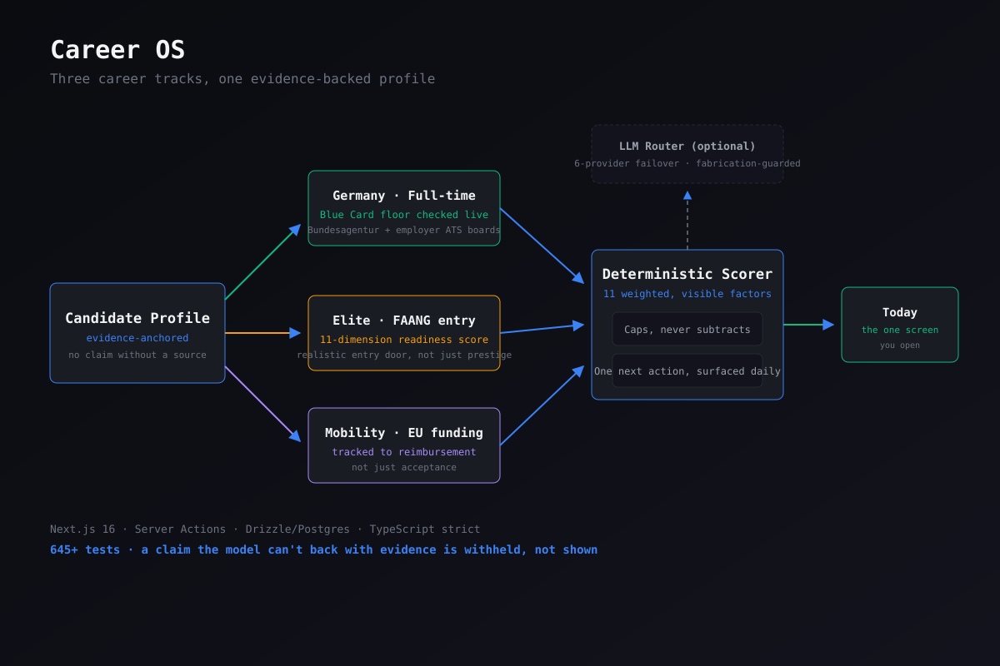

Career OS
Eine persönliche Karriere-Konsole, die drei Jobsuchen gleichzeitig steuert: eine Vollzeitstelle in Deutschland, einen Elite- oder FAANG-Einstieg und EU-geförderte Mobilität. Alle drei greifen auf ein belegtes Profil zu, und jeder Tag verdichtet sich zu einer einzigen nächsten Aktion statt zu einem Feed zum Scrollen.
Drei Suchpfade, ein Profil, eine Entscheidung pro Tag: gebaut und genutzt für meine eigene Blue-Card-Suche

Das Problem
Drei Jobsuchen gleichzeitig zu führen bedeutet drei verschiedene Arten von Hausaufgaben: Liegt dieses Gehalt diesen Monat wirklich über der Schwelle für die EU Blue Card, ist dieses „Praktikum“ eine der wenigen realistischen Türen zu einem Spitzenarbeitgeber, wird dieses geförderte Programm mir die Kosten erstatten oder bleibe ich auf der Rechnung sitzen. Nichts davon passt in eine Tabelle, die man um 23 Uhr aktuell hält. Ich habe das Werkzeug gebaut, das ich tatsächlich brauchte, um meine eigene Suche zu führen, ohne einen der drei Bälle fallen zu lassen.
So funktioniert es
- Ein deterministischer, vollständig sichtbarer Scorer. Elf gewichtete Faktoren, darunter fachliche Passung, aufenthaltsrechtliche Machbarkeit, Senioritätsgrad, Qualität des Bewerbungswegs und Aktualität, ergeben zusammen einen Wert von 0–100, und jeder Faktor wird angezeigt; es gibt keine Blackbox-Zahl, der man einfach glauben müsste. Ein Ausschlusskriterium deckelt den Wert, statt ihn still herunterzumitteln, sodass immer sichtbar bleibt, warum eine Stelle schlecht abgeschnitten hat.
- Eine Discovery-Pipeline über fünf Ebenen. Sie beginnt bei der offiziellen API der Bundesagentur für Arbeit, geht dann zu ATS-Portalen der Arbeitgeber, die direkt aus dem Unternehmenslink jeder Anzeige erkannt werden. So entsteht ein Unternehmens- graph, der über die Zeit wächst: Die Anzeigen jedes Laufs bringen die bekannten Arbeitgeberportale des nächsten Laufs hervor. Danach folgen Aggregator-APIs (Arbeitnow, RemoteOK, The Muse, sogar der „Who is hiring?“-Thread bei Hacker News). Seiten, deren Nutzungsbedingungen automatisiertes Abrufen untersagen, also StepStone, XING und Indeed, bleiben aus Prinzip ausgeschlossen. Sie bekommen einen generierten Deeplink statt eines Scrapes.
- Eine Blue-Card-Prüfung in Echtzeit. Sie rechnet die Gehaltsschwelle für den Wechsel von §16b zu §18g für jede Stelle im Deutschland-Pfad gegen den tatsächlichen Wert dieses Monats. Diese Zahl ändert sich; eine fest einprogrammierte Konstante würde still veralten.
- Eine optionale LLM-Zweitmeinung, abgesichert durch einen Erfindungsschutz. Ein Router über sechs Anbieter (Groq, Cerebras, GitHub Models, OpenRouter, Gemini, Ollama) mit automatischem Failover erzeugt eine Einschätzung, ob sich eine Bewerbung lohnt, und formuliert Lebenslauf-Text, aber jede Aussage wird zuerst gegen meine eigenen dokumentierten Belege geprüft. Erfindet das Modell etwas, wird es zurückgehalten und mit der konkret verletzten Regel markiert, statt zu etwas geglättet zu werden, das nur plausibel klingt.
- Eigene Authentifizierung, gebaut statt angeflanscht. Argon2id für das Passphrase-Hashing, optional TOTP und eine JWT-Session,
die bei jeder Anfrage eine
epoch-Spalte gegen die Datenbank prüft. Genau das sorgt dafür, dass „überall abmelden“ offene Sessions wirklich ungültig macht, statt nur ein Cookie zu löschen und zu hoffen.
Was sich geändert hat
Die Tagesansicht verdichtet drei parallele, folgenreiche Suchen zu einer einzigen Hauptaktion. Alles andere wird bewusst ausgeblendet und nicht bloß in eine Liste geschoben, sodass woran arbeite ich heute keine Entscheidung mehr ist, die ich jeden Morgen treffe. Über 645 Tests sichern die Scoring- und Pipeline-Logik ab. Jede Seite wird serverseitig gerendert, mit Next.js 16 Server Actions als einzigem Schreibpfad, sodass es keine separate REST-Schicht gibt, die mit der Oberfläche synchron gehalten werden muss.